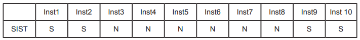
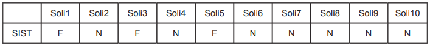

QUESTÃO 32
O MPS.BR (Melhoria de Processos do Software Brasileiro) é, ao mesmo tempo, um movimento para melhoria da qualidade e um modelo de qualidade de processo.
Guia MPS.BR (SOFTEX)
Com relação às suas características, o MPS.BR
QUESTÃO 33
Métricas de confiabilidade de software dizem respeito à probabilidade de um componente de software produzir uma saída incorreta. Originalmente as métricas de confiabilidade foram criadas para componentes de hardware, consistindo em desgaste mecânico, aquecimento elétrico e fatores físicos relacionados aos componentes. Não há desgaste em componentes de software, que podem, inclusive, continuar operando mesmo após a produção de um resultado incorreto.
Observe os quadros a seguir, a fim de identificar algumas métricas de confiabilidade e disponibilidade de um dado sistema SIST.
Quadro 1

Em que S indica que SIST estava disponível no instante de tempo (InstX) de número X e
N indica que o SIST não estava disponível no instante de tempo (InstX) de número X.
Quadro 2

Em que F indica que SIST falhou quando se fez a ele a solicitação (SoliX) de número X e
N indica que o SIST não falhou quando se fez a ele a solicitação (SoliX) de número X.
Quadro 3

O valor indica o instante, em uma dada unidade de tempo, em que ocorreu a falha (FalX) de número X.
Assinale a alternativa que corresponde, respectivamente, aos valores das métricas disponibilidade (em porcentagem), taxa de ocorrência de falha (em porcentagem) e tempo médio entre falhas (em unidade de tempo).
QUESTÃO 34
O plano de negócios é um documento usado para descrever um empreendimento e o modelo de negócios que sustentam a empresa. Sua elaboração envolve um processo de aprendizagem e autoconhecimento e ainda permite ao empreendedor situar-se no seu ambiente de negócios.
DORNELAS, J. C. A. Empreendedorismo: transformando ideias em negócios. Rio de Janeiro: Campus, 2001, p. 97A respeito do plano de negócios, avalie as seguintes asserções.
O plano de negócios é importante para gerenciar de forma mais eficaz a empresa e tomar decisões acertadas e identificar oportunidades e transformá-las em diferencial competitivo para a empresa
PORQUE
permite estabelecer comunicação interna eficaz na empresa e convencer o público-alvo externo: fornecedores, parceiros, clientes, bancos, investidores, etc. sobre os benefícios e os custos do negócio.
Acerca dessas asserções, assinale a opção correta